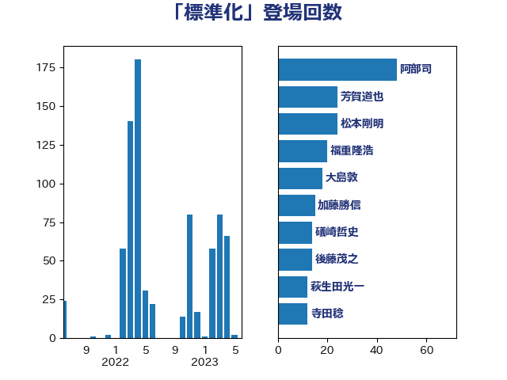

単語「標準化」

| 阿部司 | 日本維新の会 | 48 回 |
| 芳賀道也 | 国民民主党 | 24 回 |
| 松本剛明 | 自由民主党 | 24 回 |
| 福重隆浩 | 公明党 | 20 回 |
| 大島敦 | 立憲民主党 | 18 回 |
| 加藤勝信 | 自由民主党 | 15 回 |
| 礒崎哲史 | 国民民主党 | 14 回 |
| 後藤茂之 | 自由民主党 | 14 回 |
| 萩生田光一 | 自由民主党 | 12 回 |
| 寺田稔 | 自由民主党 | 12 回 |
| 吉川元 | 立憲民主党 | 12 回 |
| 金子恭之 | 自由民主党 | 11 回 |
| 中西祐介 | 自由民主党 | 11 回 |
| 高木かおり | 日本維新の会 | 10 回 |
| 福田昭夫 | 立憲民主党 | 10 回 |
| 藤井比早之 | 自由民主党 | 9 回 |
| 北神圭朗 | 無所属 | 9 回 |
| 高市早苗 | 自由民主党 | 8 回 |
| 田畑裕明 | 自由民主党 | 8 回 |
| 片山大介 | 日本維新の会 | 8 回 |
| 小林鷹之 | 自由民主党 | 8 回 |
| 吉田とも代 | 日本維新の会 | 8 回 |
| 牧島かれん | 自由民主党 | 7 回 |
| 梶山弘志 | 自由民主党 | 7 回 |
| 岸田文雄 | 自由民主党 | 6 回 |
| 尾崎正直 | 自由民主党 | 6 回 |
| 湯原俊二 | 立憲民主党 | 5 回 |
| 浅野哲 | 国民民主党 | 5 回 |
| 池下卓 | 日本維新の会 | 5 回 |
| 本田顕子 | 自由民主党 | 5 回 |
| 斉藤鉄夫 | 公明党 | 5 回 |
| 平林晃 | 公明党 | 5 回 |
| 守島正 | 日本維新の会 | 5 回 |
| 勝目康 | 自由民主党 | 5 回 |
| 西岡秀子 | 国民民主党 | 4 回 |
| 本庄知史 | 立憲民主党 | 4 回 |
| 岸真紀子 | 立憲民主党 | 4 回 |
| 赤澤亮正 | 自由民主党 | 3 回 |
| 田村憲久 | 自由民主党 | 3 回 |
| 浅田均 | 日本維新の会 | 3 回 |
| 柴田巧 | 日本維新の会 | 3 回 |
| 柘植芳文 | 自由民主党 | 3 回 |
| 末松信介 | 自由民主党 | 3 回 |
| 尾身朝子 | 自由民主党 | 3 回 |
| 大串正樹 | 自由民主党 | 3 回 |
| 中川宏昌 | 公明党 | 3 回 |
| 須藤元気 | 無所属 | 2 回 |
| 音喜多駿 | 日本維新の会 | 2 回 |
| 阿達雅志 | 自由民主党 | 2 回 |
| 野村哲郎 | 自由民主党 | 2 回 |
| 道下大樹 | 立憲民主党 | 2 回 |
| 茂木敏充 | 自由民主党 | 2 回 |
| 細田健一 | 自由民主党 | 2 回 |
| 田村まみ | 国民民主党 | 2 回 |
| 田中健 | 国民民主党 | 2 回 |
| 浜口誠 | 国民民主党 | 2 回 |
| 河野太郎 | 自由民主党 | 2 回 |
| 平将明 | 自由民主党 | 2 回 |
| 岩田和親 | 自由民主党 | 2 回 |
| 山本佐知子 | 自由民主党 | 2 回 |
| 小林史明 | 自由民主党 | 2 回 |
| 宮本岳志 | 日本共産党 | 2 回 |
| 太田房江 | 自由民主党 | 2 回 |
| 堂故茂 | 自由民主党 | 2 回 |
| 吉田久美子 | 公明党 | 2 回 |
| 古屋範子 | 公明党 | 2 回 |
| 倉林明子 | 日本共産党 | 2 回 |
| 伊藤渉 | 公明党 | 2 回 |
| 伊藤孝恵 | 国民民主党 | 2 回 |
| 三浦信祐 | 公明党 | 2 回 |
| 鳩山二郎 | 自由民主党 | 1 回 |
| 高橋光男 | 公明党 | 1 回 |
| 高木宏壽 | 自由民主党 | 1 回 |
| 青柳仁士 | 日本維新の会 | 1 回 |
| 野田国義 | 立憲民主党 | 1 回 |
| 里見隆治 | 公明党 | 1 回 |
| 輿水恵一 | 公明党 | 1 回 |
| 西田実仁 | 公明党 | 1 回 |
| 西村康稔 | 自由民主党 | 1 回 |
| 藤川政人 | 自由民主党 | 1 回 |
| 若宮健嗣 | 自由民主党 | 1 回 |
| 緑川貴士 | 立憲民主党 | 1 回 |
| 竹内譲 | 公明党 | 1 回 |
| 窪田哲也 | 公明党 | 1 回 |
| 神谷裕 | 立憲民主党 | 1 回 |
| 石井苗子 | 日本維新の会 | 1 回 |
| 石井啓一 | 公明党 | 1 回 |
| 田村智子 | 日本共産党 | 1 回 |
| 田名部匡代 | 立憲民主党 | 1 回 |
| 熊田裕通 | 自由民主党 | 1 回 |
| 江島潔 | 自由民主党 | 1 回 |
| 永岡桂子 | 自由民主党 | 1 回 |
| 柳ヶ瀬裕文 | 日本維新の会 | 1 回 |
| 松本尚 | 自由民主党 | 1 回 |
| 有村治子 | 自由民主党 | 1 回 |
| 日下正喜 | 公明党 | 1 回 |
| 川田龍平 | 立憲民主党 | 1 回 |
| 岬麻紀 | 日本維新の会 | 1 回 |
| 岡田直樹 | 自由民主党 | 1 回 |
| 小池晃 | 日本共産党 | 1 回 |
| 小倉將信 | 自由民主党 | 1 回 |
| 宮崎勝 | 公明党 | 1 回 |
| 堤かなめ | 立憲民主党 | 1 回 |
| 堀場幸子 | 日本維新の会 | 1 回 |
| 堀内詔子 | 自由民主党 | 1 回 |
| 国光あやの | 自由民主党 | 1 回 |
| 吉川赳 | 無所属 | 1 回 |
| 務台俊介 | 自由民主党 | 1 回 |
| 伊波洋一 | 無所属 | 1 回 |
| 伊佐進一 | 公明党 | 1 回 |
| 井原巧 | 自由民主党 | 1 回 |
| 井出庸生 | 自由民主党 | 1 回 |
| 五十嵐清 | 自由民主党 | 1 回 |
| 中司宏 | 日本維新の会 | 1 回 |
| 下野六太 | 公明党 | 1 回 |